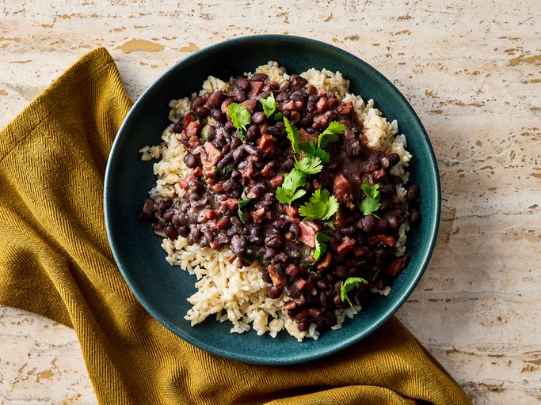

Home

Feijoada
Description
Feijoada is a traditional Brazilian dish, especially popular in Rio de Janeiro and other parts of the country. It consists of a stew made with black beans, typically cooked with various types of meat such as pork, ribs, sausage, loin, and sometimes dried beef. The dish is served with white rice, farofa (toasted manioc flour), sautéed kale, and slices of orange. It’s a flavorful and rich dish, often enjoyed during special family meals, especially on Saturdays.
Ingredients for 1 person
- 1 tablespoon olive oil
- 1 ½ cups chopped onion, divided
- ½ cup green onions, chopped
- 1 clove garlic, chopped
- 1 (12 ounce) package dry black beans, soaked overnight
- 2 smoked ham hocks
- 8 ounces diced ham
- ½ pound thickly sliced bacon, diced
- 2 bay leaves, crushed
- ⅛ teaspoon ground coriander
- salt and pepper to taste
- ½ cup chopped fresh cilantro (Optional)
- ¼ cup chopped fresh parsley (Optional)
Steps
- Gather all ingredients.
- Heat oil in a large pot or Dutch oven. Add 3/4 cup chopped onion, green onions, and garlic; cook and stir until softened, about 4 minutes.
- Pour in soaked beans and fill with enough water to cover beans by 3 inches. Bring to a boil, then reduce heat to medium-low, and simmer uncovered for 2 hours, or until tender.
- While beans are cooking, place ham hocks in a smaller pot with 1/4 cup chopped onion.
- Cover with water and simmer until meat pulls off of the bone easily, about 1 hour.
- Drain and add to beans. Meanwhile, preheat the oven to 375 degrees F (190 degrees C).
- Place ham, bacon, and remaining onion in a baking dish. Bake until mixture is crispy, 15 minutes.
- Drain bacon and ham mixture and add to beans. Season with bay leaves, coriander, salt, and pepper. Simmer, uncovered, 30 minutes more.
- Stir in chopped cilantro and parsley just before serving.